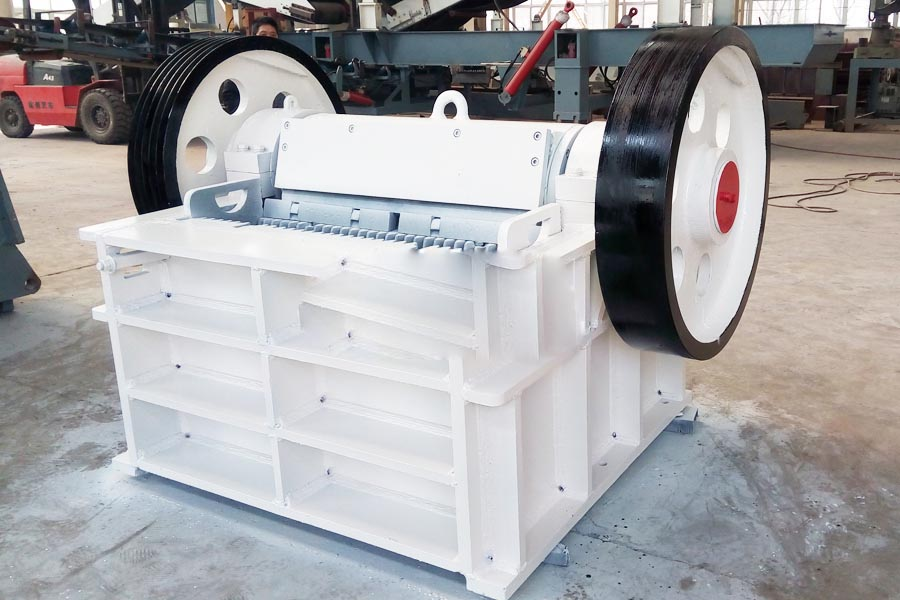

Construction waste crushing production line

Mobile construction waste crushing station for urban construction waste crushing.
crushers for iron ore
crushers for iron ore. Iron ore crushing need to use those devices? Ore crushing equipment selection, iron ore crushing process generally uses a feeder, head broken, two broken, screening, crushing, Dry these processes , for economic reasons, usually into the dry sorter ore finer the particle size, including iron ore.
Iron ore crusher, iron ore crusher / mill price, iron ore processing equipment manufacturers, iron ore processing production line includes: crushing, grinding, beneficiation three processes. Mainly in iron ore processing equipment used in iron ore crusher, ore mills, iron ore crusher and so on.

Iron ore crushing plant
CAG Machinery (Iron ore crushing plant) in mineral processing aspects widely used, many customers get more benefits, CAG product also mainly for minerals, rock crusher, mineral grinding, sand stone and mineral processing and other fields. We provide Iron ore crushing plant technical guidance, based on your specific needs, for your rational design of production lines.
Because the tariff is low, you can (Iron ore crushing plant) to save a lot of costs, it can also be purchased to get more benefits, our products and designs for you is really value for money.
Ore crushing plant, ore crushing equipment can handle a particle size of not more than 120-500 mm and a compressive strength less than 350 MPa ore, rocks, a crushing ratio, high crushing efficiency, product shape of a cube, selectable crushing, etc.
ron ores are rocks and minerals from which metallic iron can be economically extracted. The ores are usually rich in iron oxides and vary in color from dark grey, bright yellow, deep purple, to rusty red. The iron itself is usually found in the form of magnetite (Fe3O4), hematite (Fe2O3), goethite (FeO(OH)), limonite (FeO(OH).n(H2O)) or siderite (FeCO3). Ores carrying very high quantities of hematite or magnetite (greater than ~60% iron) are known as "natural ore" or "direct shipping ore", meaning they can be fed directly into iron-making blast furnaces. Most reserves of such ore have now been depleted. Iron ore is the raw material used to make pig iron, which is one of the main raw materials to make steel. 98% of the mined iron ore is used to make steel.[1] Indeed, it has been argued that iron ore is "more integral to the global economy than any other commodity, except perhaps oil".
Crusher machine for iron ore
In iron ore crushing process include coarse crushing, medium crushing, fine crushing and pulverizing.In iron ore crushing plant, jaw crusher is often to be selected, in medium crushing process, processer usually use impact crusher, and in the fine crushing, short-head type cone crusher is suitable.The extracted iron ore will be transported to the primary crusher. Over-sized and wet ore will be sent to the ROM stockpile for pre-treatment before it is sent to the primary crusher. Primary and secondary crushing followed by screening will result in lumps and fines sized between -32mm +8mm and -8mm respectively. The lump and fine products will be loaded and hauled to the port.
Iron ore crusher ore crusher_ iron ore crushing mill equipment, crushers for iron ore. CAG as domestic mining machinery industry leader, we have been committed to the development of energy-efficient equipment for China's iron ore crusher iron ore market.
Iron ore crusher, ore crushing production line, CAG iron ore crusher | Iron Ore crushing production line, raw materials: iron ore, production: 100t / h, iron ore crusher production line equipment configuration: feeder , jaw crusher, hydraulic cone crusher, circular vibrating screen.
Leave Me A Message, Now
If you have any questions regarding equipment prices, production line configuration or other problems, you can send a message to us, we will contact you soon.